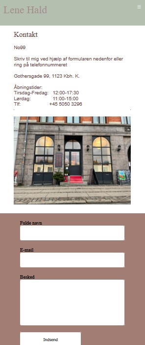
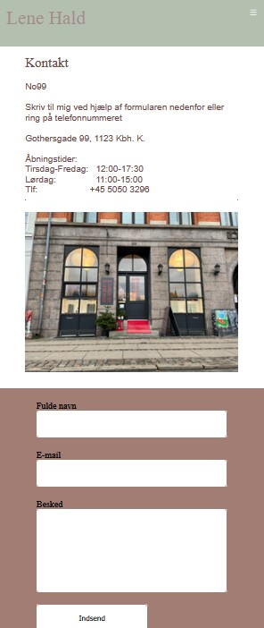

Tema 5
Grundlæggende indhold
Pilotprojekt
I dette tema var vi inddelt i studiegrupper og blev introduceret for
bla. Video-og lydredigering, diverse tests heriblandt 5-sekunders test
og BERT, Github og Netlify.
I pilotprojektet skulle vi som gruppe interviewe en person, der
beretter om sin passion. Her stiftede jeg bekendtskab med
grundlæggende faglige begreber og metoder indenfor video-content
Redesign
I redesignopgaven samarbejdede vi med Lene Hald Jewellery. Vi
redesignede fem af hendes sider på hendes website herunder forside, en
kollektions side, en produktside, om Lene Hald samt kontaktside.
Lene Hald er en selvstændig smykkedesigner og ædelmetalformgiver med
et meget personligt og unikt udtryk. Det ønskede vi at fange i vores
redesign ved at implementere flere farver og fremhæve hendes måske
mest unikke smykkekollektion, som havde været på ustillinger i New
York.
Som værktøjer i processen anvendte vi et fælles scrumboard for at give
os et overblik over forløbet. Heriblandt var Github også et essentielt
redskab for et godt og effektivt samarbejde.
Jeg stod blandt andet til ansvar for splash-videoen og kontaktsiden.
 
